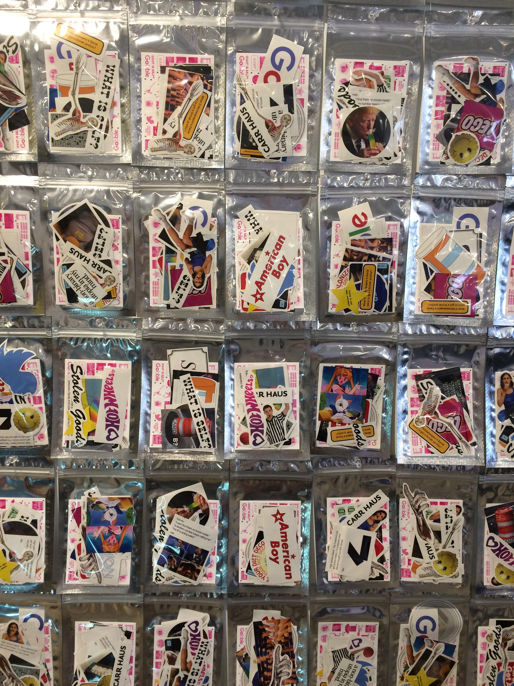
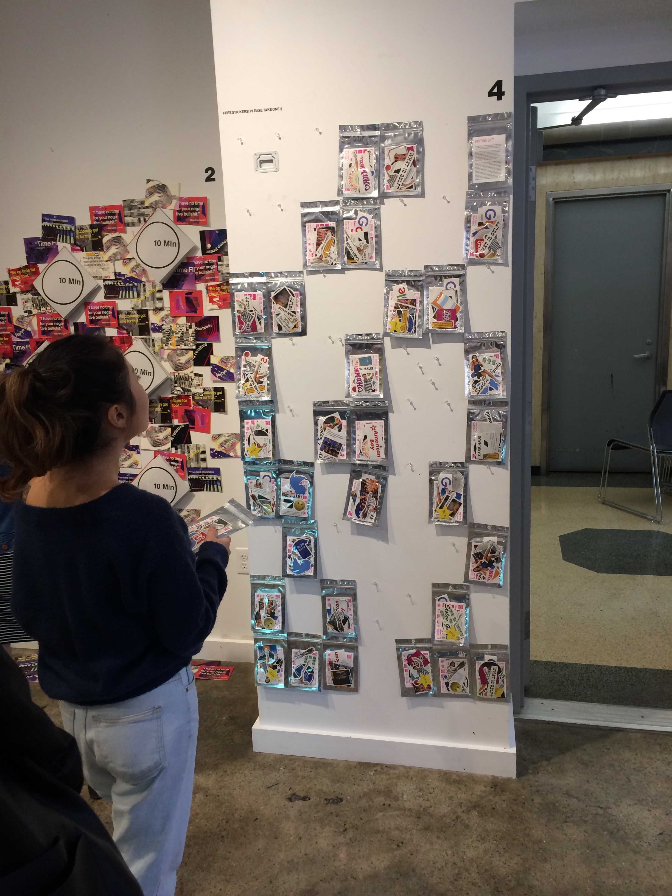
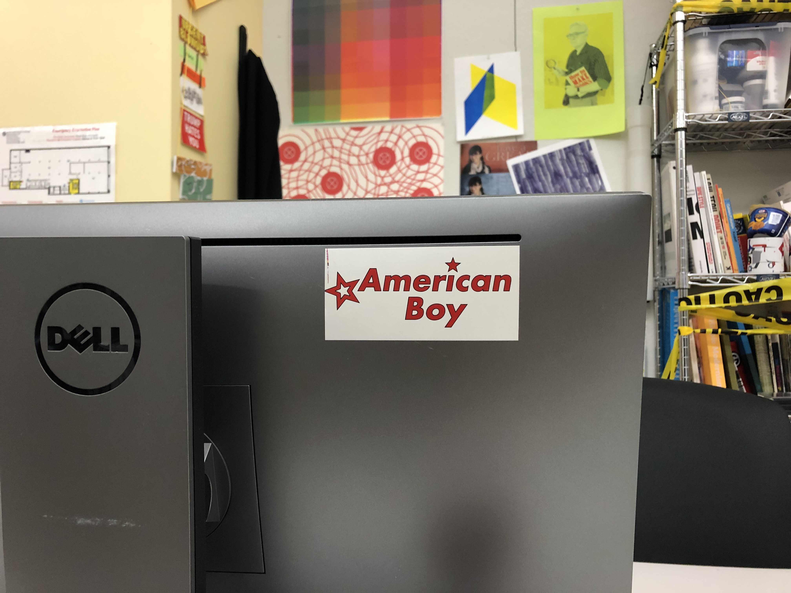
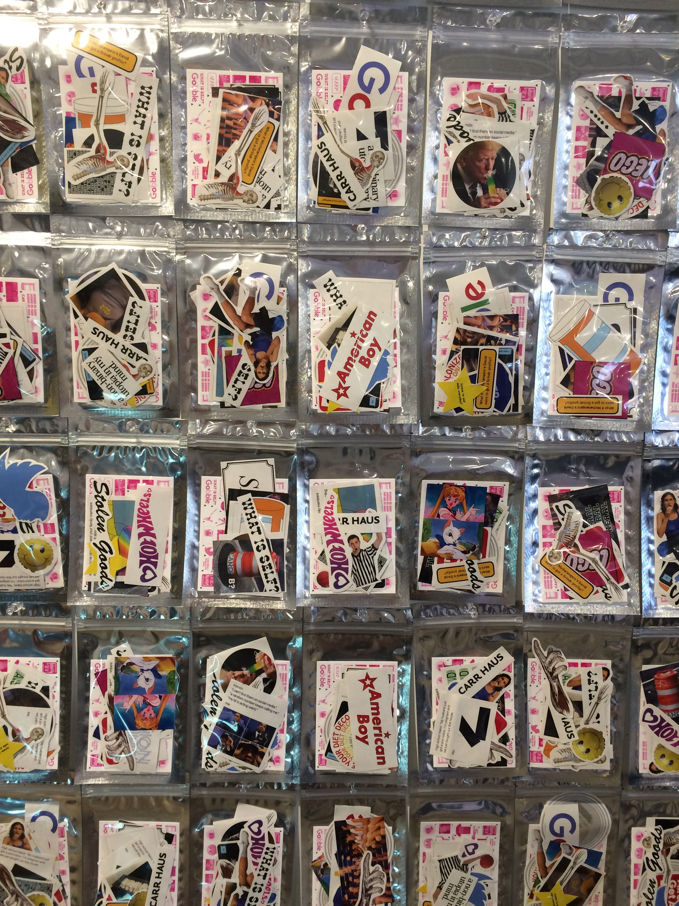
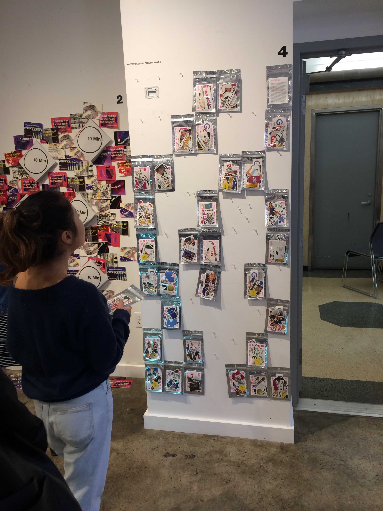
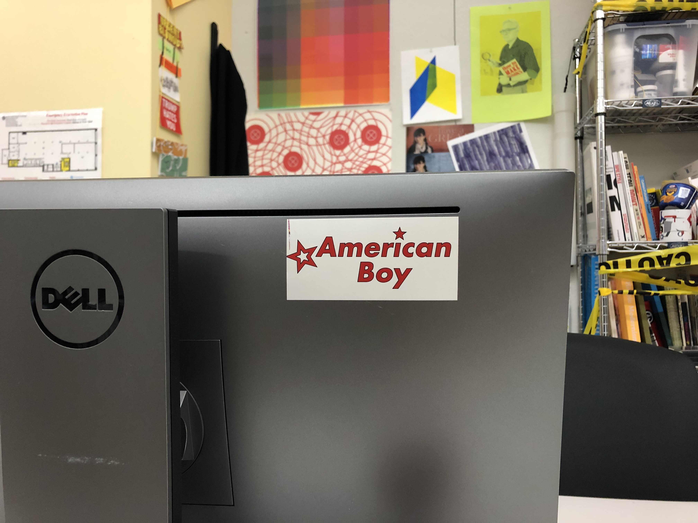

My childhood was the inspiration for this project. My mother did her best to influence my choices; both pink baby clothes and Barbie were banned, but I had a large collection of hot wheels. Despite her best efforts, I grew up loving toys designed for girls as well. While society is taking steps towards greater acceptance of gender fluidity and freedom of gender expression, numerous studies confirm that boys and girls are still raised differently. Toys, cartoons, books, and logos all send opposing messages to boys and girls about how gender should be performed. These double standards are harmful to both genders, but studies show that they are particularly detrimental to young girls. After compiling my research, I drew inspiration from classic identity standards manuals from NASA and the EPA to create a very modernist book. I then subverted the genre by printing on pink paper and including informal captions about my personal relationship to the toys. Afterwards, I worked with peers on a compilation project and created stickers of some of my remixed logotypes. I especially enjoy seeing my American Boy stickers in the wild.
Back
 




